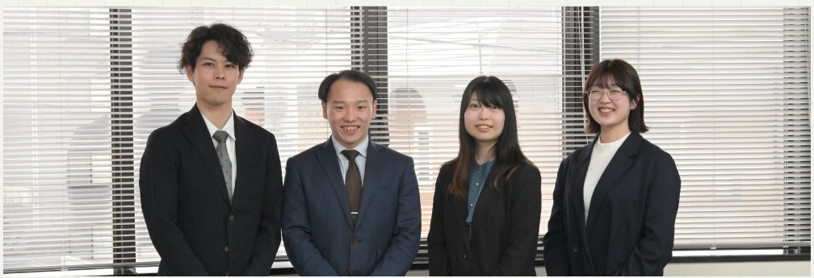
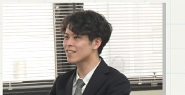
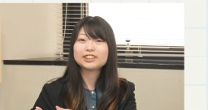
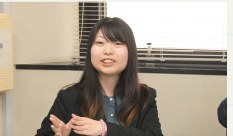
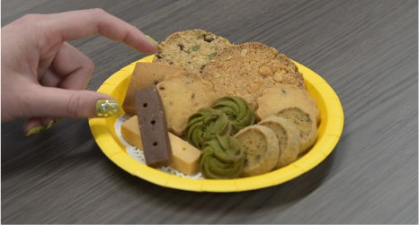
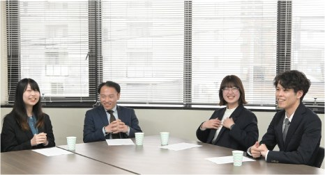
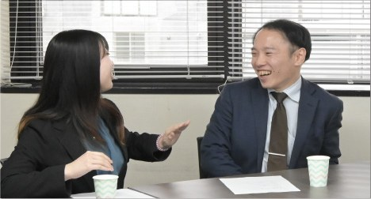
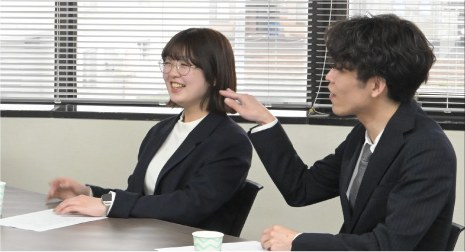
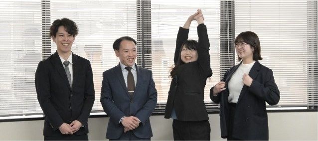

入社３年目までの社員を集めて、それぞれの入社のきっかけやこれまでの経験を振り返りながら、須田製版で働く中で感じたことや会社の雰囲気について語り合いました。実際に働いているからこそ分かる、現場の声をお届けします。

Tさん
2024年入社 営業部7課
学習塾関連の折込チラシや情報誌を担当しています。新聞社への申込、部数調整、加工手配まで管理し、印刷物を正確に届けることで販促活動を支えています。
Sさん
2023年入社 営業部1課
主に官公庁や公益財団などを担当しています。公式印刷物を扱うため、受注時は綿密な打合せから始め、スケジュール管理や校正対応まで一貫して進行しています。

Mさん
2025年入社 営業部5課
流通企業のチラシなど販促媒体を担当しています。クライアントや社内と連携しながら制作を進め、現地での校正対応も行っています。

Kさん
2026年入社 営業部4課
流通系企業の定期印刷物（ギフト系）を担当しています。クライアント・営業・制作での連携が不可欠で、チームとしてメンバー全員で進行しています。
「印刷会社 須田製版を選んだ理由と採用の時の話を教えてください」
地元は道外ですが、両親の札幌転勤を機に、自身も札幌での就職を考えていました。未経験でしたが、新しい環境に飛び込みたくて。
Kさん
生まれ育った札幌に戻り、地元の企業で働きたいという強い希望があり面接を受けました。
Sさん
前職で須田製版に仕事を依頼していて名前を知っていました。デジタル全盛の時代だからこそあえて紙として形に残る仕事に携わりたいと思ったので、そこに魅力を感じて応募しましたね。
Mさん
大学の先輩から紹介されたのがきっかけでした。他社も受けていましたが、面接後のレスポンスが驚くほど早く、帰宅途中に合格の通知が来たほどでした。
Tさん
私も翌日には連絡が来ていました！
Mさん
面接の手応えがすぐに分かって、嬉しかったですよね。
Tさん
面接の後半は雑談もあって、内容から職場の雰囲気が伝わってきました。そこで実際に働くイメージも自然と湧きましたね。
Mさん


「入社後について教えてください」
中途採用だと、即戦力を求められるのかなって不安もありました。でも、まずは打ち合わせに同行させてもらって、実際のやり取りを見ながら仕事の流れを覚えていけたので安心しましたね。マンツーマンで座学の時間もありました。その後は、あまり干渉せずに見守ってくれているので、自分としてはやりやすいです。
Sさん
僕も同じく初めは同行させてもらいながら仕事を覚えていきました。今は少しずつ一人で任せてもらえる仕事も増えてきましたが、「あれ、どうなってる？」と先輩に声をかけてもらうこともあって、気にかけてもらえているんだなと感じます。最初はトラブルが起きると焦ることも多かったですが、先輩方が慌てずに各部署と連携しながら素早く対応している姿を見て、とても頼もしいなと感じました。
Tさん
困った時はちゃんとフォローしてくれるので、一人で抱え込まなくていい安心感がありますよね。
Mさん
ありますね。仕事以外でも飲み会に誘っていただくことがあり、業務外でも気軽に話せる雰囲気があります。そういう距離感はありがたいなと感じます。
Tさん
私も上司がもう本当に頼れる存在で、背中を見ながら日々勉強しています！
Kさん
私は前職では一人で仕事を進めることが多かったのですが、今の課は大きな案件なのでチーム全員で担当しています。情報共有をしながら進めていくので、自然と周りに相談しやすい環境だと感じていますね。
Mさん
入社して間もない頃に骨折で1ヶ月ほど休んでしまったことがあったのですが、同僚のみなさんが気にかけてくれて、復帰もしやすかったです。社内の人と関わる中で、少しずつ仕事の流れや背景も分かるようになってきましたよ。
Kさん
課によって仕事の進め方や雰囲気は違いますが、どの課も周りと連携しながら進めている印象がありますよね。
Sさん


「須田製版で働いて良かったことは？」
会社に置いてある見本の中に母校の大学案内を見つけた時は嬉しかったですね。自分の人生に関わってきたものと、今の仕事が繋がっているんだなと感じて、「この会社を選んで良かったな」と思えた瞬間でした。
Mさん
その気持ち、分かります。自分が制作に関わったパンフレットを観光客の方が手に取っているのを偶然見かけた時は、本当に嬉しかったです。自分の仕事が形になって、誰かの役に立っているのを実感できるのは、この仕事のやりがいだと思います。
Sさん
本当に、意外と身近なところに自分たちの仕事があるんですよね。普段の生活の中でも見かけることが多くて、「これも関わっているんだ」と感じることがあります。
Kさん
色々な場所へ行けるのはこの仕事の面白いところです。僕は運転が好きなのでいかに効率よく回るかを考えるのがパズルみたいで楽しいなと感じています！
Tさん
あ、私は運転苦手です。少しずつ慣れていく予定です！（笑）
Mさん
残業がたまたま続いていた時期に「毎日頑張る姿は誰かが見ているし、いつか報われる。大変でも折れずに頑張れ」と声をかけてもらった時は嬉しかったし、素直に頑張ろうって思いましたね。
Sさん
人の良さを感じる瞬間は多いですね。社歴や立場に関係なく、話しやすい人が多いです。
Kさん
僕もそう思います。
Tさん
親身になってくれる周りの人がいてくれることは、働くモチベーションにもつながっています。フランクで頼りになる人たちが揃っているのは、この会社のいいところだと思います。
Kさん

「これから入社を考えている方へメッセージ」
須田製版は、印刷だけではなく本当にさまざまな仕事に関わっているので、これまでの経験や得意なことが思わぬ場面で活きる会社だと思います。実際に、課や担当が違えば仕事の内容も進め方もかなり違いますし、いろいろなタイプの人がいるからこそ新しい発想や柔軟な対応につながっていると思いますし、そこが働く面白さだと思います。
Tさん
印刷会社と聞くと、昔ながらの仕事をイメージされる方もいるかもしれません。でも実際は新しい企画やサービスに携わることも多いので、仕事を通して自然と業界の情報や世の中の流れに触れられる環境だと思います。毎日違った刺激がありますし、楽しみながら働きたい方にはおすすめです。
Kさん
入社前は、忙しそうな先輩に質問しづらいのかなという不安もありましたが、私の課は気軽に声をかけやすい雰囲気があって、相談するとみなさん丁寧に教えてくれます。幅広い業界のお客様と関わる機会も多いので、人と関わりながら成長していきたい方には合っている環境だと思います。
Mさん
長く地域に根ざしてきた会社なので、営業として動く中でも「須田製版さんだからお願いしたい」と言っていただける場面があります。今まで先輩方が築いてきた信頼関係の中で、自分も仕事を任せていただいているんだなと感じますね。最初は誰でも不安があると思いますが、とにかくやってみたら楽しい会社ですよ。少しでも興味を持っていただけたら、ぜひ一緒に働きましょう。
Sさん